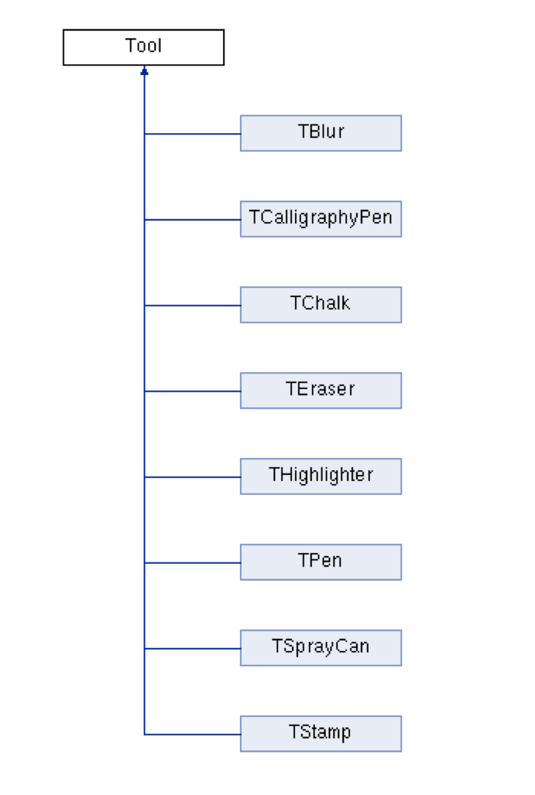
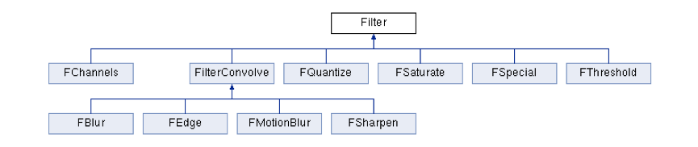
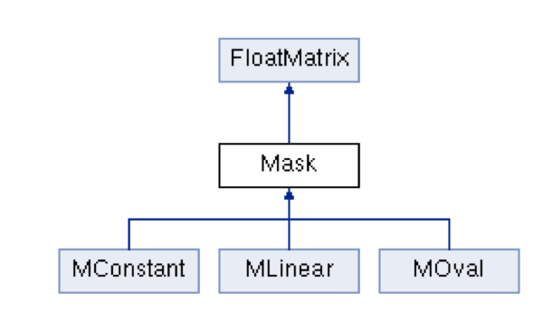

Project Design
Iteration1 Group Design: Click here to view
Iteration2 Group Design: Click here to view
The overall design of the project utilizes several design patterns in order to make the code as clean as possible,
and as friendly as possible to future expansion. First, let's look at a UML diagram describing the general layout
of the major classes of the project:

This particular diagram
shows the FlashPhoto application, but the same diagram could be made with the Mia application. They're very similar,
utilizing the same classes. In fact, both programs are built upon a shared libphoto library, which holds all files
besides FlashPhoto.cpp and FlashPhoto.h, MIAApp.cpp and MIAAPP.h, and their two respective main.cpp files.
Separating the .cpp and .h files of the project from either specific application was one extremely important design decision that
allowed us to build two applications that are similar, but that target different uses. Having everything in a library makes it
very easy to create these two applications by having them simply grab precisely what they need out of the library. FlashPhoto is
an application geared more toward visual creation, with a greater creative suite of tools and filters to allow for more visual expression.
Mia, on the other hand, was created for use in hospitals, to view multi-layered images such as brain scans, and to be able to mark up the
images with lines and targets. Since Mia doesn't need as many tools and filters, it simply ignores the c++ files it won't use.
The project utilizes a few other useful design patterns, which we'll go over now:
Inheritance
Inheritance is used early and often throughout the design of this project. Both FlashPhoto and Mia inherit from BaseGfxApp
in order to utilize its functionality in creating an interactive GUI for the user.

Each specific tool class also inherits from the main Tool class shown in the UML diagram below. This allows us to avoid
repeating the code required to apply the tools to the canvas (for example, much of the code in the "applyToCanvas" method
can be used by multiple tools). Occasionally, a specific tool would override the "applyToCanvas" method in order to
implement its special needs, and with inheritance all of that is very easy to do.

The specific filters were broken down in a similar fashion from the main Filter class, although there is an extra
layer of inheritance to accomodate the two different types of filters, namely convolution filters and non-convolutions
filters. The inheritance structure worked well here as well.

Different masks and kernels were used to implement the tools and filters. Ultimately, both kernels and masks are
implemented through float matrices, so we had a FloatMatrix class that tools and filters used, and then an
inheritance hierarchy under the FloatMatrix class to realize the various different kernels and masks needed
given the specific tool or filter.
Strategy Pattern
We utilized the strategy pattern in a very helpful way in our design. One example of its implementation is with the way masks and kernels
were handled, as can be seen in the FloatMatrix inheritance diagram above. Having this separated from the Tool and Filter classes allows
the program to grab the kernel or mask algorithm it needs through the FloatMatrix. This way, we can avoid an extremely messy inheritance tree
in order to get the right combination of tool or filter and kernel or mask.
Factory Pattern
The factory pattern can be clearly seen in the main UML diagram at the top of this page. Our applications create and use multiple tools and
filters, so rather than repeat the same code over and over to create these things, we have seperate factory classes to simplify and automate
the task of tool and filter creation. It also simplifies exapansion of the applications in the future, as creating new tools and filters
is made easier. Please visit our pages on adding new brushes and filters for more detail.